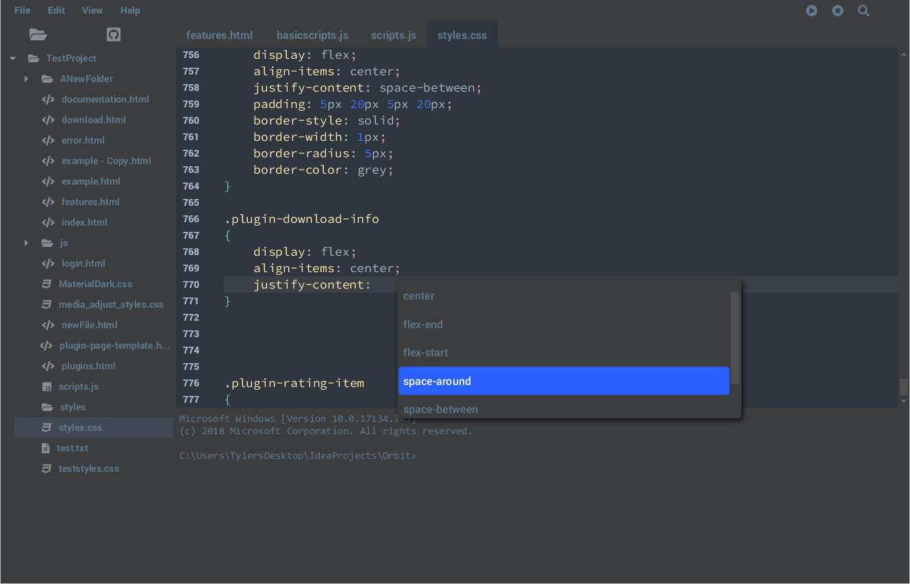

Orbit analyzes your project and makes accurate code completion predictions
for HTML, CSS, and eventually other languages. Using intelligent inspections,
Orbit will inform you of any possible issues or mistakes along with quick
and easy fix options.

Smart Editor
Customization
Customization was built in from the start of Orbit. Custom code themes
can easily be created by editing Orbits' stylesheets allowing you to create
an application and editor designed personally for you.